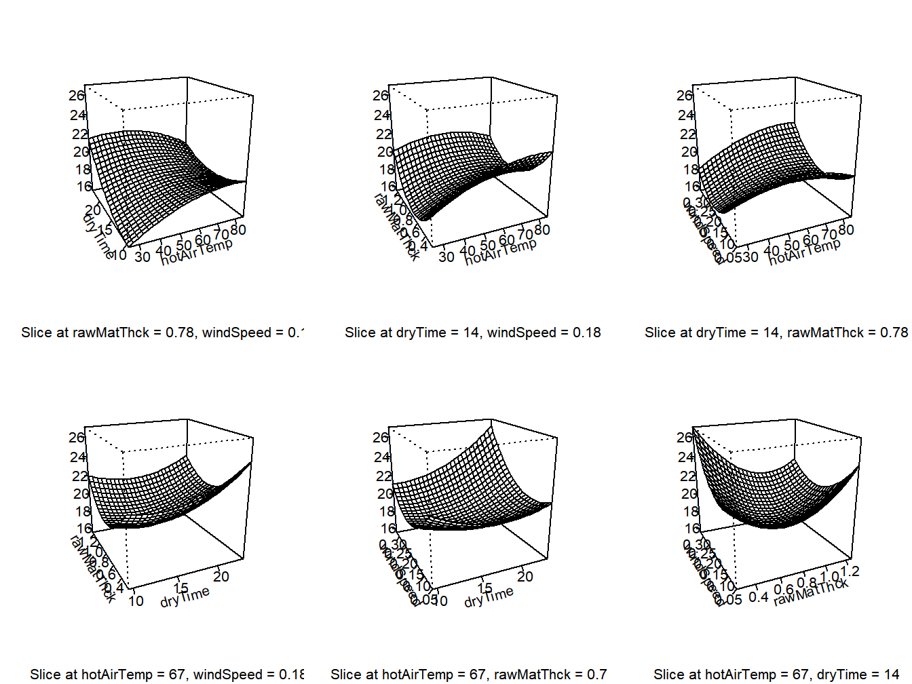
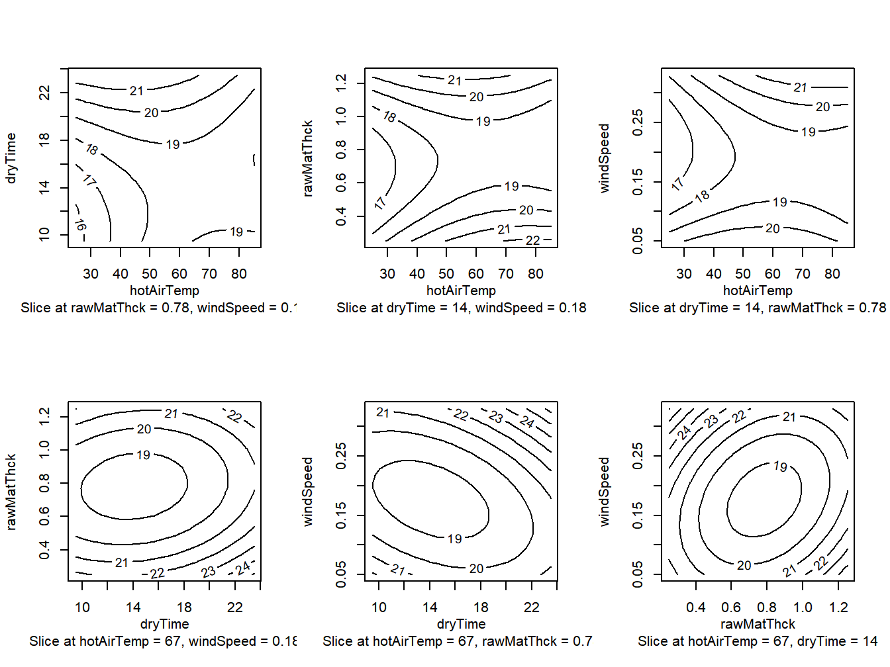
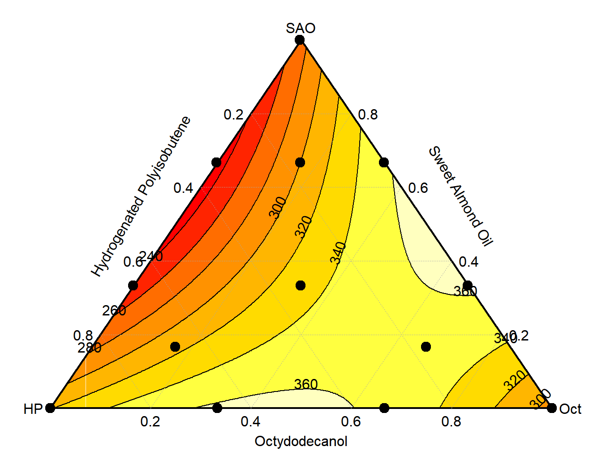

Chapter 14 Response Surface and Mixture Designs
Response surface and mixture designs are used in a wide range of engineering fields. The goal is to choose levels of a group of numeric predictor variables that optimize the response variable(s). Response surfaces are based on \(k\) predictors at several levels and models are typically based on a second-order model with linear, interaction, and quadratic terms among the predictors. Mixture designs have several inputs, but these are restricted to sum to 1 (or 100%).
14.1 Response Surface Designs
The model for a second order response surface with \(k\) factors is given below and can be implemented easily using the rsm package in R.
\[ Y = \beta_0 + \sum_{i=1}^k \beta_{i}X_i + \sum_{i=1}^{k-1}\sum_{i'=i+1}^k\beta_{ii'}X_iX_i' + \sum_{i=1}^k\beta_{ii}X_i^2 + \epsilon \] The model has \(1+k+k(k-1)/2+k\) parameters. Once the regression model is fit, individual parameters and groups (linear terms, 2-factor interactions, quadratic terms) can be tested for significance. The fitted model can be written in scalar or matrix form.
\[ \hat{Y}=\hat{\beta}_0 + \sum_{i=1}^k \hat{\beta}_{i}X_i + \sum_{i=1}^{k-1}\sum_{i'=i+1}^k\hat{\beta}_{ii'}X_iX_i' + \sum_{i=1}^k\hat{\beta}_{ii}X_i^2 = \hat{\beta}_0+ B_1'x + x'B_2x \] where \(x\), \(B_1\), \(B_2\) are defined as follow. \[ x=\begin{bmatrix} X_1 \\ \vdots \\ X_k \\ \end{bmatrix} \qquad B_1 = \begin{bmatrix} \hat{\beta}_1 \\ \vdots \\ \hat{\beta}_k\\ \end{bmatrix} \qquad B_2 = \begin{bmatrix} \hat{\beta}_{11} & \hat{\beta}_{12}/2 & \cdots & \hat{\beta}_{1k}/2 \\ \hat{\beta}_{12}/2 & \hat{\beta}_{22} & \cdots & \hat{\beta}_{2k}/2 \\ \vdots & \vdots & \ddots & \vdots \\ \hat{\beta}_{1k}/2 & \hat{\beta}_{2k}/2 & \cdots & \hat{\beta}_{kk}\\ \end{bmatrix} \] Taking the derivative of \(\hat{Y}\) with respect to \(x\), setting it equal to zero, gives the optimal set of inputs for the \(k\) factors (which may fall outside of possible values). This is printed directly in the summary of the rsm fit.
\[ \frac{\partial \hat{Y}}{\partial x}= B_1 + 2B_2x \quad \stackrel{\rm set}{=}0 \quad \Rightarrow \quad x^* = -\frac{1}{2}B_2^{-1}B_1 \]
Two commonly used designs for response surfaces are the Central Composite Design and the Box-Behnken Design.
In the Central Composite Design, there are \(k\) factors, each with three equally spaced levels coded \(-1,0,+1\). A \(2^k\) factorial is set up with each factor at \(+/-1\). Then \(2k\) observations are made with \(k-1\) variables at their 0 levels and the remaining factor at \(\pm \alpha\) where \(\alpha\) is commonly \(\sqrt{2}\), \(\sqrt{3}\), or 2, these are labelled “axial points.” Finally, there are \(c\) observations with each of the \(k\) factors at their center (0) levels, which permits a goodness of fit test.
Example 13.1 - Solar Drying of Avocado Pulp
A study was conducted as a response surface design with \(k=4\) factors to measure solar drying of avocado pulp (Kowarit, Sathpornprasath, and Jansri 2024). The 4 factors are described below, and the response was moisture content of the avocado pulp (lower values are better). This is a central composite design with \(\alpha=2\).
- Hot Air Temperature (\(X_1\), Celsius): -1=40, 0=55, +1=70 (axial points at 25, 85)
- Drying Time (\(X_2\), hours): -1=13, 0=16.5, +1=20 (axial points at 9.5, 23.5)
- Raw Material Thickness (\(X_3\), cm): -1=0.5, 0=0.75, +1=1.00 (axial points at 0.25, 1.25)
- Wind Speed (\(X_4\), meters/second): -1=0.12, 0=0.19, +1=0.26 (axial points at 0.05, 0.33)
There were \(2^4=16\) runs with the 4 factors at +/-1, \(4(2)=8\) runs at the axial points for each factor (with the other 3 factors at their 0 level), and 6 runs at the center points, for a total of 30 experimental runs. The R program and output are given below, with response surface and contour plots in Figure 14.1 and Figure 14.2, respectively.
## run hotAirTemp dryTime rawMatThck windSpeed moisture
## 1 1 70 20.0 1.00 0.26 20.33
## 2 2 70 13.0 1.00 0.12 20.15
## 3 3 85 16.5 0.75 0.19 18.26
## 4 4 55 16.5 0.75 0.19 18.90
## 5 5 55 16.5 0.75 0.19 17.99
## 6 6 70 20.0 0.50 0.12 18.54## run hotAirTemp dryTime rawMatThck windSpeed moisture
## 25 25 70 13.0 1.00 0.26 20.29
## 26 26 55 9.5 0.75 0.19 19.03
## 27 27 40 20.0 1.00 0.26 21.61
## 28 28 55 16.5 0.75 0.19 18.90
## 29 29 55 16.5 0.75 0.19 18.90
## 30 30 40 13.0 0.50 0.12 17.73##
## Call:
## rsm(formula = moisture ~ SO(hotAirTemp, dryTime, rawMatThck,
## windSpeed), data = am)
##
## Estimate Std. Error t value Pr(>|t|)
## (Intercept) 2.1996e+01 1.1195e+01 1.9649 0.068230 .
## hotAirTemp 2.6835e-01 1.5944e-01 1.6831 0.113053
## dryTime -4.8311e-01 7.3777e-01 -0.6548 0.522495
## rawMatThck -8.5945e+00 9.1563e+00 -0.9386 0.362780
## windSpeed -6.4616e+01 3.2146e+01 -2.0101 0.062761 .
## hotAirTemp:dryTime -6.8333e-03 5.4205e-03 -1.2607 0.226691
## hotAirTemp:rawMatThck -5.9667e-02 7.5887e-02 -0.7863 0.443959
## hotAirTemp:windSpeed 2.1786e-01 2.7102e-01 0.8038 0.434049
## dryTime:rawMatThck -1.4143e-01 3.2523e-01 -0.4349 0.669856
## dryTime:windSpeed 1.5561e+00 1.1615e+00 1.3397 0.200282
## rawMatThck:windSpeed -2.4071e+01 1.6261e+01 -1.4803 0.159495
## hotAirTemp^2 -1.2204e-03 9.6599e-04 -1.2633 0.225752
## dryTime^2 2.7585e-02 1.7743e-02 1.5547 0.140853
## rawMatThck^2 1.2027e+01 3.4776e+00 3.4584 0.003511 **
## windSpeed^2 1.3274e+02 4.4357e+01 2.9925 0.009110 **
## ---
## Signif. codes: 0 '***' 0.001 '**' 0.01 '*' 0.05 '.' 0.1 ' ' 1
##
## Multiple R-squared: 0.7643, Adjusted R-squared: 0.5444
## F-statistic: 3.475 on 14 and 15 DF, p-value: 0.01123
##
## Analysis of Variance Table
##
## Response: moisture
## Df Sum Sq Mean Sq F value
## FO(hotAirTemp, dryTime, rawMatThck, windSpeed) 4 23.1131 5.7783 4.4595
## TWI(hotAirTemp, dryTime, rawMatThck, windSpeed) 6 9.1073 1.5179 1.1715
## PQ(hotAirTemp, dryTime, rawMatThck, windSpeed) 4 30.8123 7.7031 5.9450
## Residuals 15 19.4359 1.2957
## Lack of fit 10 18.7458 1.8746 13.5823
## Pure error 5 0.6901 0.1380
## Pr(>F)
## FO(hotAirTemp, dryTime, rawMatThck, windSpeed) 0.014231
## TWI(hotAirTemp, dryTime, rawMatThck, windSpeed) 0.371796
## PQ(hotAirTemp, dryTime, rawMatThck, windSpeed) 0.004511
## Residuals
## Lack of fit 0.005031
## Pure error
##
## Stationary point of response surface:
## hotAirTemp dryTime rawMatThck windSpeed
## 67.1141331 14.0922992 0.7835529 0.1767657
##
## Eigenanalysis:
## eigen() decomposition
## $values
## [1] 133.931086216 10.838362960 0.023680706 -0.002003314
##
## $vectors
## [,1] [,2] [,3] [,4]
## hotAirTemp 0.0008310985 0.0017517386 -0.1599582827 0.987121871
## dryTime 0.0058342613 -0.0005625942 0.9871073880 0.159952022
## rawMatThck -0.0982548808 -0.9951596092 -0.0002787034 0.001803565
## windSpeed 0.9951438334 -0.0982546031 -0.0056810736 -0.001584081par(mfrow=c(2,3))
persp(mod1, ~ hotAirTemp+dryTime+rawMatThck+windSpeed,
at=summary(mod1)$canonical$xs)
Figure 14.1: Response Surface for avocado pulp study - 3D Plots
par(mfrow=c(2,3))
contour(mod1, ~ hotAirTemp+dryTime+rawMatThck+windSpeed,
at=summary(mod1)$canonical$xs)
Figure 14.2: Response Surface for avocado pulp study - Contour Plots
The linear (first order) terms and polynomial quadratic terms are significant as groups with \(P\)-values of .0142 and .0045, respectively. The two-factor interactions are not, with \(P\)=.3718. The stationary (optimal) point is \(x^*\)=(67.11,14.09,0.78,0.18).
\[\nabla \]
The Box-Behnken design places runs at every combination of \(\pm 1\) for each pair of factors, with all other factors at their 0 (central) level. There are multiple runs for each factor at their central level. The analysis is the same as for the Central Composite Design.
Example 13.2 – Gels of Diclofenac and Curcumin for Transdermal Drug Delivery
A study (Chaudhary, et al (2011)) had 3 factors, each at 3 levels (Chaudhary et al. 2011). The factors were as follow.
- Polymer Concentration - (0.5, 1.0, 1.5 % w/w)
- Ethanol Concentration (10, 15, 20 % w/w)
- PG Concentration (5, 10, 15 %w/w).
There were three response variables: \(Y1\) = Flux of DDEA (mg/(cm2 h)), \(Y2\) = Flux of CRM (mg/(cm2 h)), and \(Y3\) = Viscosity of Gel (cp). The experiment had \(n\) = 17 runs. The design and data are given below.
| runnum | polyconc | ethnconc | pgconc | fluxddea | fluxcrm | viscgel |
|---|---|---|---|---|---|---|
| 1 | -1 | -1 | 0 | 0.67 | 1.48 | 185 |
| 2 | 0 | 0 | 0 | 0.24 | 1.90 | 1924 |
| 3 | 0 | 1 | -1 | 0.25 | 3.31 | 2018 |
| 4 | 0 | -1 | 1 | 0.22 | 2.88 | 2310 |
| 5 | 1 | 0 | -1 | 0.11 | 3.30 | 3227 |
| 6 | -1 | 1 | 0 | 0.67 | 1.72 | 145 |
| 7 | -1 | 0 | -1 | 0.69 | 1.37 | 143 |
| 8 | 0 | 0 | 0 | 0.23 | 1.87 | 1923 |
| 9 | -1 | 0 | 1 | 0.67 | 1.52 | 176 |
| 10 | 0 | 0 | 0 | 0.24 | 1.91 | 1800 |
| 11 | 0 | 0 | 0 | 0.24 | 1.92 | 1921 |
| 12 | 1 | 0 | 1 | 0.17 | 2.98 | 3071 |
| 13 | 0 | 1 | 1 | 0.23 | 2.01 | 1783 |
| 14 | 0 | 0 | 0 | 0.24 | 1.87 | 1922 |
| 15 | 1 | -1 | 0 | 0.11 | 3.07 | 3320 |
| 16 | 1 | 1 | 0 | 0.16 | 3.45 | 2801 |
| 17 | 0 | -1 | -1 | 0.20 | 1.71 | 2245 |
\[\nabla\]
14.2 Mixture Models
Mixture models are similar to response surface models, with the restriction that the sum of the \(X\) levels is equal to 1, that is the \(X\) variables are components of a mixture. There are four widely used models that can be implemented in the mixexp package in R. Note that these models do not include an intercept, as the X’s sum to 1, and we will use as \(k\) as the number of mixture components.
\[ \mbox{Linear:} \quad E\{Y\}=\sum_{i=1}^k \beta_iX_i \] \[ \mbox{Quadratic:} \quad E\{Y\}=\sum_{i=1}^k \beta_iX_i + \sum_{i=1}^{k-1}\sum_{i'=i+1}^k \beta_{ii'}X_iX_{i'} \] \[ \mbox{Full Cubic:} \quad E\{Y\}=\sum_{i=1}^k \beta_iX_i + \sum_{i=1}^{k-1}\sum_{i'=i+1}^k \beta_{ii'}X_iX_{i'} + \sum_{i=1}^{k-1}\sum_{i'=i+1}^k\delta_{ii'}X_iX_{i'}\left(X_i-X_{i'}\right) + \]
\[ + \sum_{i=1}^{k-2}\sum_{i'=i+1}^{k-1}\sum_{i''=i'+1}^k\beta_{ii'i''}X_iX_{i'}X_{i''} \] \[ \mbox{Special Cubic:} \quad E\{Y\}=\sum_{i=1}^k \beta_iX_i + \sum_{i=1}^{k-1}\sum_{i'=i+1}^k \beta_{ii'}X_iX_{i'} + \sum_{i=1}^{k-2}\sum_{i'=i+1}^{k-1}\sum_{i''=i'+1}^k\beta_{ii'i''}X_iX_{i'}X_{i''} \] The goal is to choose the mixture that optimizes the output.
Example 13.3 - Breaking Strength of Lipstick Blends
A mixture experiment considered \(k=3\) inputs for lipstick (Hui, Tamburic, and Grant-Poss 2017). One response was breaking strength (grams), with the following inputs, this was Stage 1C in the paper, and the Full Cubic model was fit.
- Sweet Almond Oil \((X_1)\)
- Hydrogenated Polyisobutene \((X_2)\)
- Octydodecanol \((X_3)\)
The R code and output are given below.
## ExpNum X1 X2 X3 Break Soft
## 1 1 1.00000 0.00000 0.00000 325.8 62.0
## 2 2 1.00000 0.00000 0.00000 239.2 53.0
## 3 3 0.00000 1.00000 0.00000 332.9 61.3
## 4 4 0.00000 0.00000 1.00000 242.1 58.8
## 5 5 0.66667 0.33333 0.00000 247.3 53.3
## 6 6 0.33333 0.66667 0.00000 258.9 53.3
## 7 7 0.66667 0.00000 0.33333 342.1 61.5
## 8 8 0.66667 0.00000 0.33333 343.0 57.8
## 9 9 0.33333 0.33333 0.33333 292.5 53.8
## 10 10 0.00000 0.66667 0.33333 299.9 52.8
## 11 11 0.33333 0.00000 0.66667 399.2 61.3
## 12 12 0.00000 0.33333 0.66667 407.6 58.0
## 13 13 0.66667 0.16667 0.16667 258.9 53.3
## 14 14 0.16667 0.66667 0.16667 326.0 55.0
## 15 15 0.16667 0.16667 0.66667 325.1 53.8
## 16 16 0.16667 0.16667 0.66667 436.8 59.0mixvars <- c("X1","X2","X3") ### Creates group of mixvars
ls.mod1 <- MixModel(lsa,"Break",mixvars,3)##
## coefficients Std.err t.value Prob
## X1 283.4746 33.32269 8.5069535 0.0001444655
## X2 331.9844 47.06751 7.0533671 0.0004063754
## X3 244.3524 47.08335 5.1897831 0.0020349071
## cubic(X1, X2) -201.1627 393.63036 -0.5110446 0.6275740863
## cubic(X1, X3) -437.2026 349.65399 -1.2503865 0.2577122053
## cubic(X2, X3) -667.6002 388.25675 -1.7194813 0.1363220821
## X2:X1 -222.8240 196.31796 -1.1350157 0.2996670546
## X3:X1 464.4747 180.58235 2.5720936 0.0422159307
## X2:X3 314.0409 210.14454 1.4944045 0.1856908476
## X2:X3:X1 -1152.8906 1320.00853 -0.8733963 0.4160293996
##
## Residual standard error: 47.18515 on 6 degrees of freedom
## Corrected Multiple R-squared: 0.7582724### Fits model, must specify: dataframe,"Y",mixvars,
### model (1=linear, 2=quadratic, 3=full cubic, 4=special cubic)
anova(ls.mod1)## Analysis of Variance Table
##
## Response: Break
## Df Sum Sq Mean Sq F value Pr(>F)
## X1 1 822487 822487 369.4245 1.283e-06 ***
## X2 1 418251 418251 187.8594 9.375e-06 ***
## X3 1 380430 380430 170.8724 1.236e-05 ***
## cubic(X1, X2) 1 802 802 0.3604 0.57023
## cubic(X1, X3) 1 1624 1624 0.7293 0.42589
## cubic(X2, X3) 1 5300 5300 2.3807 0.17378
## X1:X2 1 7691 7691 3.4546 0.11243
## X1:X3 1 11369 11369 5.1064 0.06457 .
## X2:X3 1 3437 3437 1.5437 0.26042
## X1:X2:X3 1 1698 1698 0.7629 0.41602
## Residuals 6 13358 2226
## ---
## Signif. codes: 0 '***' 0.001 '**' 0.01 '*' 0.05 '.' 0.1 ' ' 1##
## Call:
## lm(formula = mixmodnI, data = frame)
##
## Residuals:
## Min 1Q Median 3Q Max
## -60.722 -15.433 0.876 12.755 50.978
##
## Coefficients:
## Estimate Std. Error t value Pr(>|t|)
## X1 283.47 33.32 8.507 0.000144 ***
## X2 331.98 47.07 7.053 0.000406 ***
## X3 244.35 47.08 5.190 0.002035 **
## cubic(X1, X2) -201.16 393.63 -0.511 0.627570
## cubic(X1, X3) -437.20 349.65 -1.250 0.257712
## cubic(X2, X3) -667.60 388.25 -1.719 0.136321
## X1:X2 -222.83 196.32 -1.135 0.299661
## X1:X3 464.47 180.58 2.572 0.042215 *
## X2:X3 314.04 210.14 1.494 0.185689
## X1:X2:X3 -1152.90 1320.00 -0.873 0.416021
## ---
## Signif. codes: 0 '***' 0.001 '**' 0.01 '*' 0.05 '.' 0.1 ' ' 1
##
## Residual standard error: 47.18 on 6 degrees of freedom
## Multiple R-squared: 0.992, Adjusted R-squared: 0.9786
## F-statistic: 74.25 on 10 and 6 DF, p-value: 1.76e-05MixturePlot(X3,X2,X1,Break,x3lab="Octydodecanol", x2lab="Hydrogenated Polyisobutene",
x1lab="Sweet Almond Oil", corner.labs=c("Oct","HP","SAO"),
constrts=FALSE,contrs=TRUE,cols=TRUE, mod=2,n.breaks=9)
Figure 14.3: Mixture Plot for lipstick study
## X1 X2 X3 Break
## 1 1.00000 0.00000 0.00000 325.8 283.4746
## 2 1.00000 0.00000 0.00000 239.2 283.4746
## 3 0.00000 1.00000 0.00000 332.9 331.9841
## 4 0.00000 0.00000 1.00000 242.1 244.3521
## 5 0.66667 0.33333 0.00000 247.3 235.2266
## 6 0.33333 0.66667 0.00000 258.9 281.1992
## 7 0.66667 0.00000 0.33333 342.1 341.2641
## 8 0.66667 0.00000 0.33333 343.0 341.2641
## 9 0.33333 0.33333 0.33333 292.5 305.6438
## 10 0.00000 0.66667 0.33333 299.9 323.1077
## 11 0.33333 0.00000 0.66667 399.2 392.9941
## 12 0.00000 0.33333 0.66667 407.6 392.8011
## 13 0.66667 0.16667 0.16667 258.9 263.7996
## 14 0.16667 0.66667 0.16667 326.0 285.0699
## 15 0.16667 0.16667 0.66667 325.1 385.8225
## 16 0.16667 0.16667 0.66667 436.8 385.8225The highest breaking strengths \((>360)\) appear at blends of approximately 50/50% between Sweet Almond Oil and Octydodecanol, based on the plot of the simplex.
\[\nabla \]